Piscina e jardins
Lofts organizados ao redor da piscina e dos jardins, com muro de pedra, deck e pátio interno integrados ao clima de Arraial d'Ajuda.
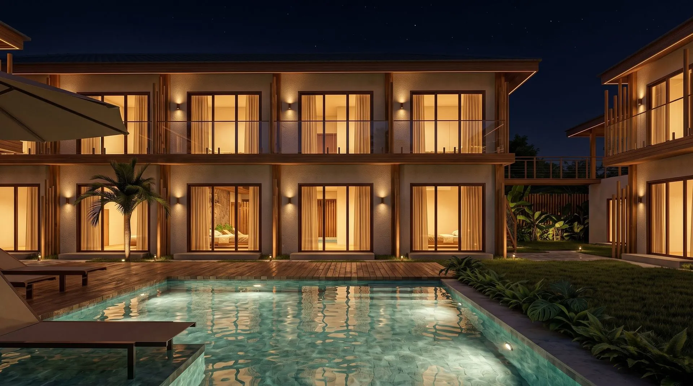
Um lugar para viver. Um patrimônio para valorizar. Lofts com piscina, jardins e circuito wellness, entre o centro histórico e as praias de Arraial d'Ajuda.
Cadastre-se e receba o book do AURA Corais e as próximas novidades do lançamento.
Seus dados foram enviados por e-mail para a equipe do AURA Corais. Em breve você recebe a apresentação completa e as novidades do lançamento.
Lofts pensados para hospedagem, organizados ao redor de piscina, jardins e áreas de convivência. São 30 lofts em dois pavimentos e duas tipologias: o térreo, com área externa privativa, e o superior, com varanda. Arquitetura e paisagismo integrados ao clima de Arraial d'Ajuda.
Cinco razões para ter um loft no AURA Corais. Arraial d'Ajuda como destino, com turismo consolidado o ano inteiro. Localização estratégica, entre o centro e as praias. Produto pensado para hospedagem e operação. Potencial de renda em mercado ativo. Potencial de valorização em região em consolidação.
Para quem compra para investir, duas teses caminham separadas: o potencial de geração de receita por locação por temporada e o potencial de valorização de um imóvel novo, em região em consolidação. Renda e valorização têm naturezas distintas e não se somam. Estimativas, não garantias.
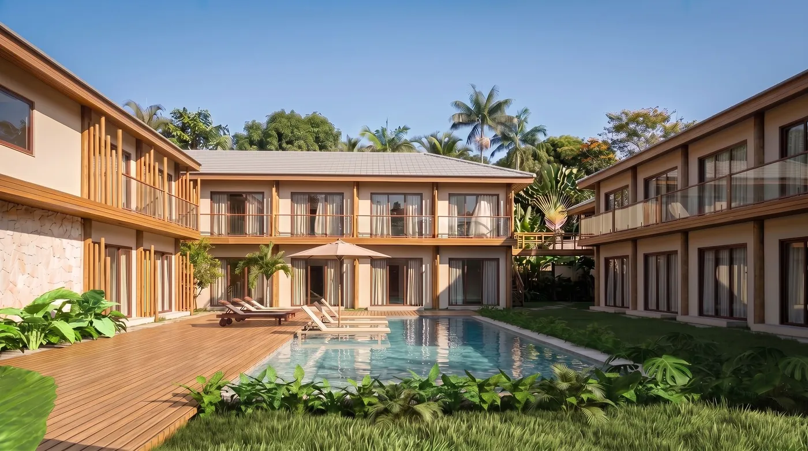
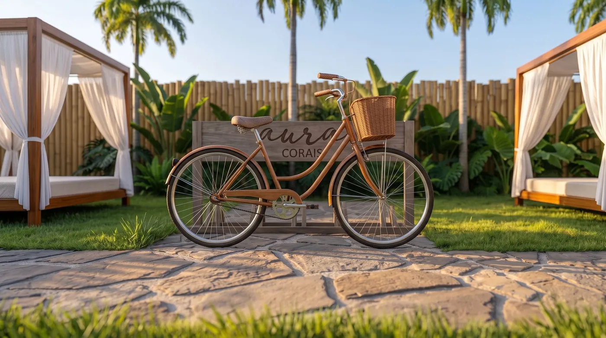
Praias reconhecidas, gastronomia, o charme da vila histórica e uma experiência turística que atrai visitantes do Brasil e do exterior. Alta temporada, feriados prolongados e férias escolares se somam a uma procura por hospedagem ao longo de todo o ano.
Pitinga, Parracho e Mucugê a poucos quilômetros do loteamento, em um litoral que atrai visitantes do Brasil e do exterior.
O charme do centro histórico e da Rua do Mucugê, com gastronomia e uma experiência turística consolidada em Arraial d'Ajuda.
Verão, janeiro, Réveillon, Carnaval, férias e feriados prolongados se somam a uma procura por hospedagem ao longo de todo o ano.
Fachadas, piscina, pátios e jardins, recepção, restaurante e área gourmet, cozinha, academia e o circuito de bem-estar do AURA, em imagens do projeto.
Imagens ilustrativas. Áreas comuns previstas conforme projeto; decoração sujeita a alteração conforme o memorial descritivo.
Piscina, jardins e áreas de convivência, com um circuito de bem-estar dentro do AURA: espaço para meditação, sauna molhada e academia, ao lado da piscina e dos jardins. Áreas comuns previstas conforme projeto e memorial descritivo.
Lofts organizados ao redor da piscina e dos jardins, com muro de pedra, deck e pátio interno integrados ao clima de Arraial d'Ajuda.
Um ambiente silencioso, integrado ao paisagismo, para pausas, respiração e práticas contemplativas.
Sauna a vapor para relaxar depois da praia ou do treino, dentro do circuito de bem-estar do AURA.
Área de musculação e cardio com fechamento em vidro e vista para o jardim, parte do circuito wellness.
Café da manhã, restaurante e cozinha gourmet nas áreas comuns do AURA, previstos conforme projeto e memorial descritivo.
Jardins com camas balinesas para o descanso ao ar livre, integrados ao paisagismo e à piscina do AURA.
Recepção prevista conforme projeto, junto às áreas comuns do AURA Corais, para receber proprietários e hóspedes.
Bicicletário e lavanderia previstos conforme projeto, para a praticidade de quem vive e de quem opera o loft.
Conforto e inteligência espacial: cama de casal, sofá-cama, banheiro privativo, cozinha compacta integrada, espaço funcional e armazenamento. No térreo, área externa privativa; no superior, varanda.
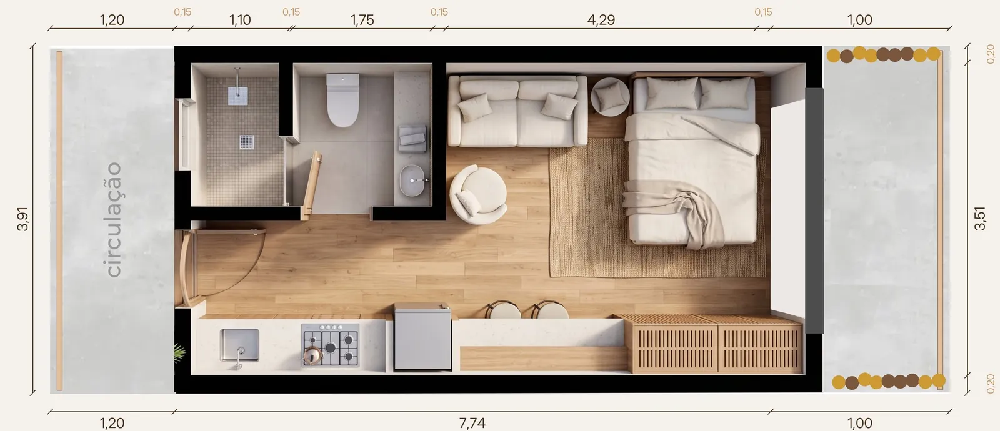
28,71 m² internos + varanda de 3,71 m²
Compacto, integrado e com varanda voltada para os jardins e a piscina. Detalhes que fazem a estadia.
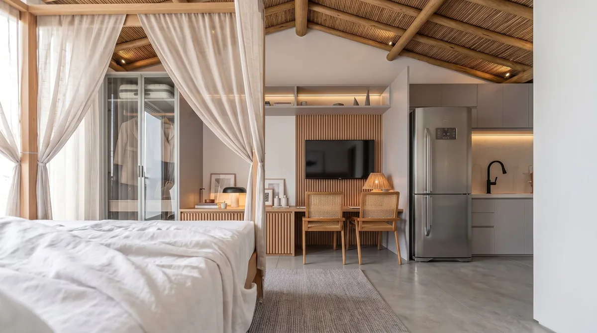
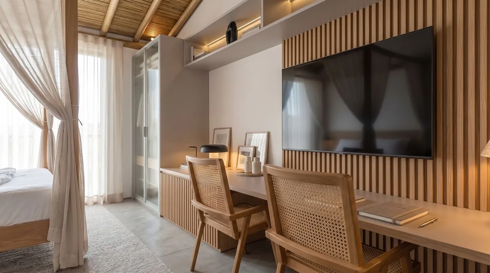
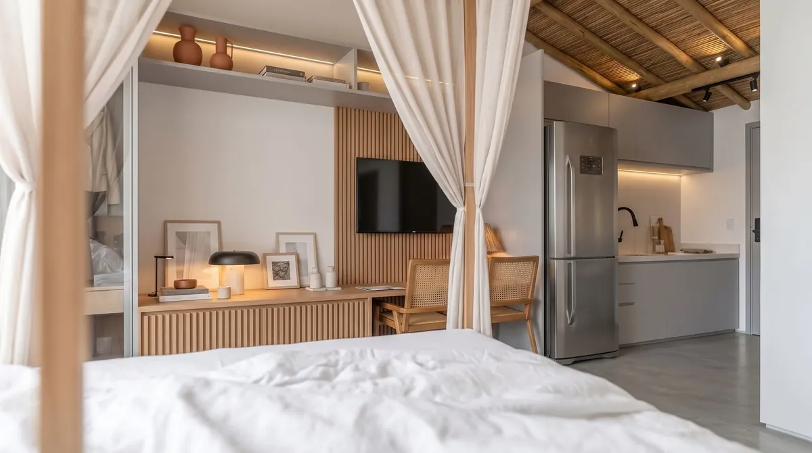
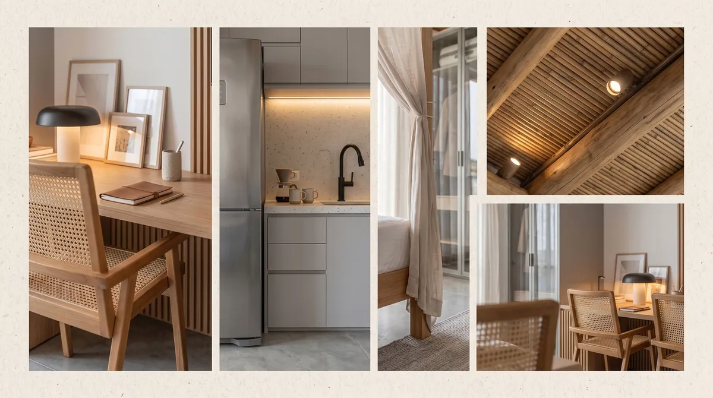
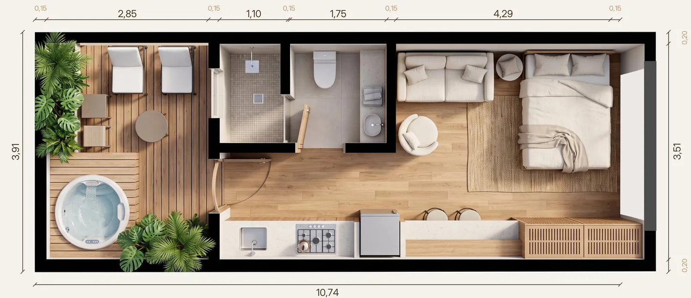
28,71 m² internos + área externa privativa · 39,84 a 72,21 m² totais conforme a unidade (áreas aproximadas)
Mais área privativa, com deck exclusivo e acesso direto ao pátio e aos jardins. Mais espaço para viver o AURA.
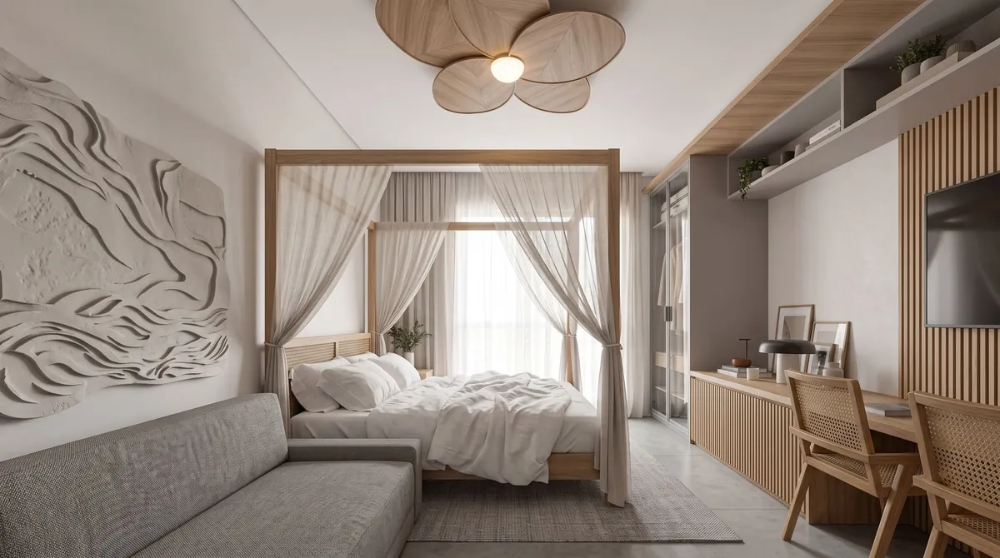
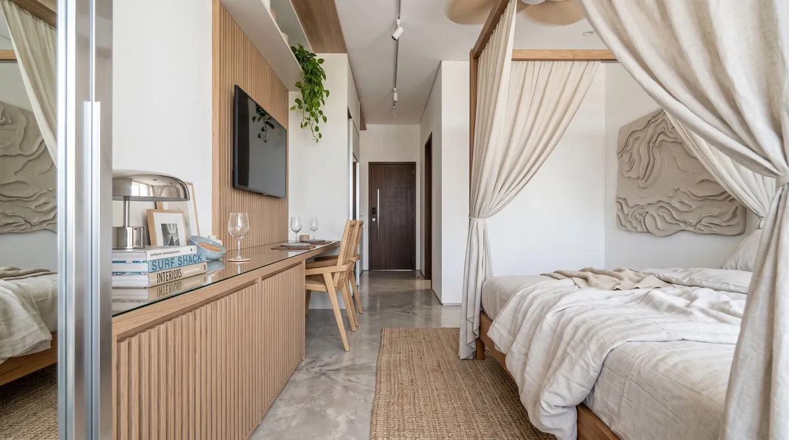
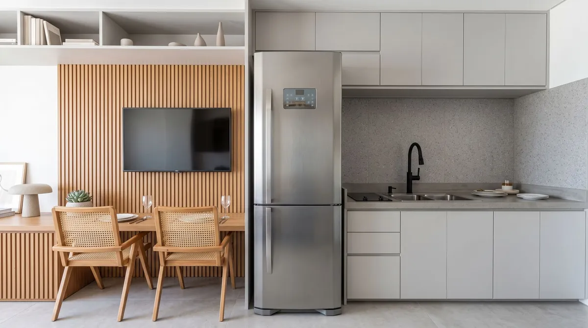
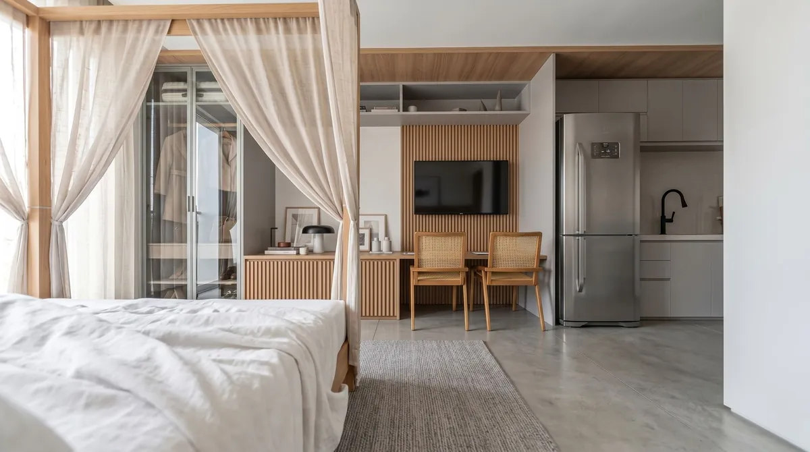
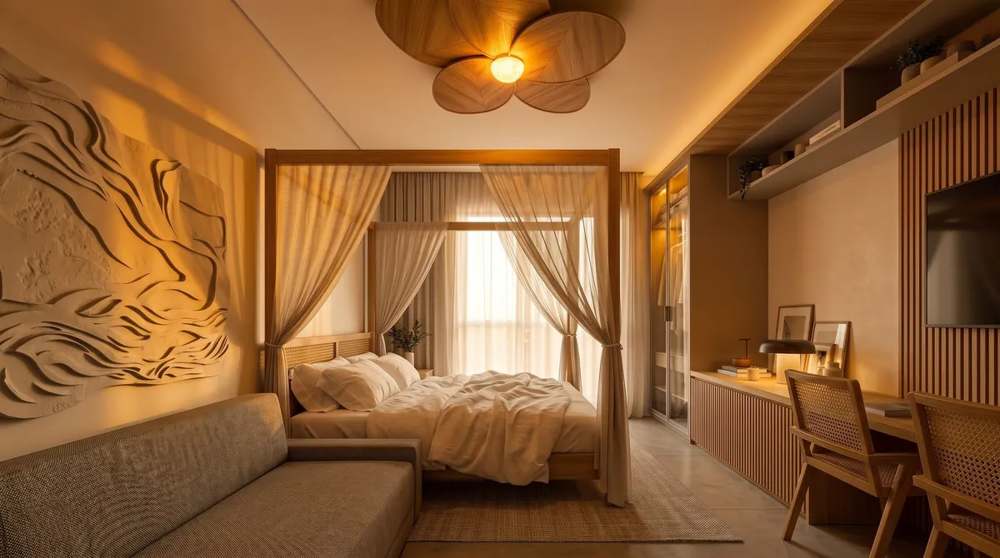
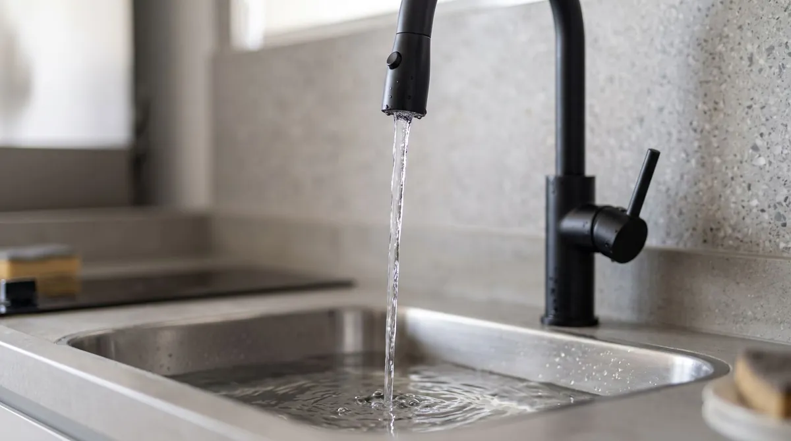
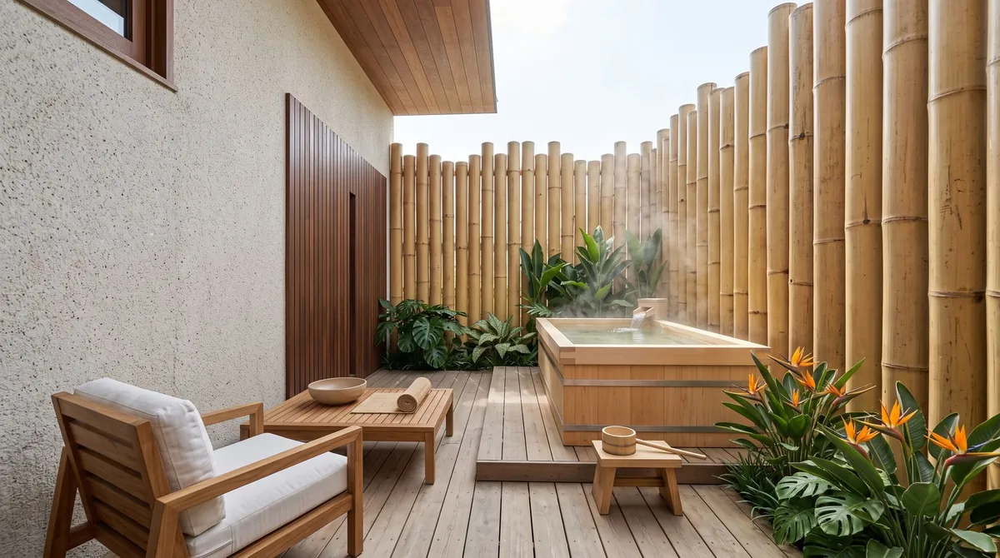
Plantas ilustrativas com cotas do projeto (escala original 1:100). Áreas privativas aproximadas; metragem final conforme projeto aprovado e memorial descritivo. Mobiliário e decoração são sugestão; parte dos itens de decoração e a construção do deck privativo são contratados à parte. Imagens ilustrativas.
Sobre as falésias, entre o centro histórico e as praias do Parracho e de Pitinga, em uma das áreas residenciais em consolidação de Arraial d'Ajuda.
Loteamento Corais do Arraial · Arraial d'Ajuda · Porto Seguro – BA
Distâncias aproximadas, em linha reta ou por via, a partir do loteamento; posição exata do terreno conforme projeto aprovado.
Faturamento bruto anual projetado por tipologia, antes de qualquer dedução. Um empreendimento novo entra no mercado sem histórico: a cada ano, reputação, avaliações e recorrência elevam a ocupação e o posicionamento de tarifa. Projeção conservadora, não constitui promessa ou garantia de resultado.
Aproveite o loft nas suas temporadas em Arraial d'Ajuda, com a piscina, os jardins e o circuito wellness do AURA à sua disposição.
Coloque a unidade para trabalhar na locação por temporada, com diárias de hospedagem ao longo do calendário de Arraial d'Ajuda.
Use o loft nos períodos que escolher e disponibilize a unidade para hóspedes nos demais. A forma de administrar é decisão do proprietário.
Três cenários de valorização nominal do imóvel, apresentados em faixas para leitura prudente. Renda e valorização têm naturezas distintas e são apresentadas separadamente; os indicadores não se somam. Estimativas, não garantias.
Faturamento bruto de hospedagem, antes de qualquer dedução, projetado por ano de operação. Projeção conservadora, estimada a partir de referências de mercado; não constitui promessa ou garantia de resultado. A valorização é estimativa, não garantia, e depende do mercado ao longo do tempo. Renda e valorização não se somam.
O AURA Corais é uma realização da VRV Incorporadora. SPE, Registro de Incorporação, patrimônio de afetação e contabilidade segregada compõem a estrutura prevista para o empreendimento.
Sociedade de propósito específico dedicada ao AURA Corais, quando constituída, conforme as etapas de estruturação.
Memorial e incorporação registrados em cartório, quando registrados. Empreendimento sujeito a registro de incorporação.
Separação patrimonial do empreendimento, se constituído, conforme as etapas de registro e obra.
Contas e escrituração próprias do empreendimento, previstas conforme as etapas de estruturação, registro e obra.
Estrutura prevista para o empreendimento; itens formalizados conforme as etapas de estruturação, registro e obra.
Projetos, licenças e aprovações municipais, base para as etapas seguintes do empreendimento.
Memorial de incorporação registrado em cartório, formalizando a estrutura prevista para o empreendimento.
Mobilização, fundações e estrutura: o começo da obra do AURA Corais no loteamento Corais do Arraial.
Execução com acompanhamento físico-financeiro, com a evolução da obra e do caixa reportada aos compradores.
Vistoria, chaves e início da operação: o loft pronto para viver, hospedar ou rentabilizar.
As datas de cada etapa serão divulgadas após as respectivas aprovações. Prazos estimados, sujeitos a alteração.
Matérias de veículos independentes sobre Porto Seguro, Arraial d'Ajuda e a Costa do Descobrimento. Links externos; o conteúdo é de responsabilidade dos veículos.
Porto Seguro recebe quase 2,5 milhões de visitantes em 2025
19/08/2026Hotelier NewsHotel Report: Porto Seguro (BA) combina demanda e tarifa em alta
11/08/2026Forbes BrasilComo o 'Luxo Descalço' e Restrições Ambientais Fazem com Que Trancoso Não Pare de Valorizar
27/08/2026Jornal CorreioO que Trancoso tem de especial? Saiba por que distrito baiano é o preferido dos famosos no Réveillon
29/12/2025Prefeitura de Porto SeguroCRESCIMENTO: Turismo em Porto Seguro cresce 17% em janeiro de 2025, superando 2024
30/01/2025Lofts contemporâneos no Loteamento Corais do Arraial, em Arraial d'Ajuda, Porto Seguro – BA, entre o centro histórico e as praias do Parracho e de Pitinga: 30 lofts em duas tipologias, organizados ao redor de piscina, jardins e circuito wellness. Realização VRV Incorporadora.
Loft superior com 32,42 m² de área privativa (28,71 m² internos + varanda de 3,71 m²) e loft térreo com 28,71 m² internos + área externa privativa (40,58 m² na unidade típica; 39,84 a 72,21 m² conforme a unidade). Áreas aproximadas; metragem final conforme projeto aprovado.
Living e dormitório integrados com cama de casal e sofá-cama, cozinha compacta com pia, cooktop e frigobar, banheiro privativo com box, bancada de trabalho e armários. Térreo com área externa privativa (deck e ofurô contratados à parte); superior com varanda. Parte da decoração é contratada à parte.
Recepção, piscina, restaurante e área gourmet, academia integrada ao verde, circuito wellness com espaço de meditação e sauna molhada, jardins com camas balinesas, bicicletário e lavanderia. Áreas comuns previstas conforme projeto e memorial descritivo.
Em breve. O Registro de Incorporação e as demais etapas seguem o cronograma previsto, e as datas de cada etapa serão divulgadas após as respectivas aprovações. Cadastre-se para receber a apresentação em primeira mão.
Não. Os valores são projeções de faturamento bruto, antes de qualquer dedução, estimadas a partir de referências de mercado. Projeção conservadora, não constitui promessa ou garantia de resultado; depende do mercado, da forma de administração escolhida pelo proprietário e das condições futuras.
Não. Renda e valorização têm naturezas distintas e são apresentadas separadamente; os indicadores não se somam. A valorização aparece apenas em cenários percentuais e é estimativa, não garantia; depende do mercado ao longo do tempo.
Sim. Seu imóvel, suas escolhas: use nas suas temporadas, coloque a unidade na locação por temporada ou combine as duas formas. A forma de administrar é decisão do proprietário.
Cadastre-se ou fale com a equipe no WhatsApp para receber a apresentação do AURA Corais e as próximas novidades do lançamento.